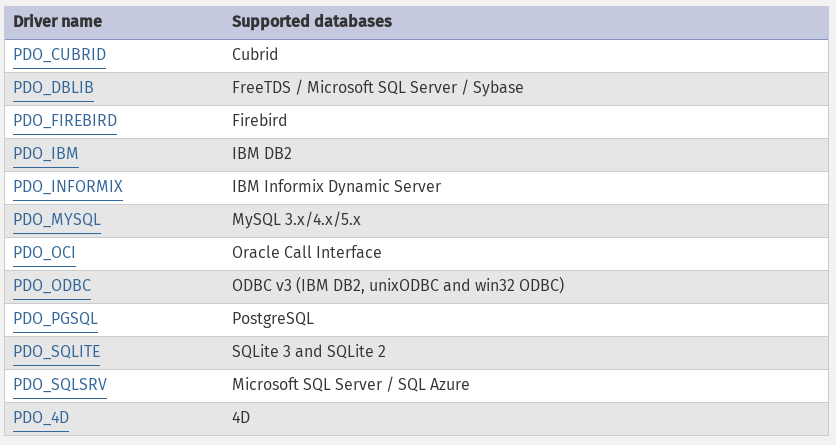

<!doctype html>
<html lang="sv">
<meta charset="utf-8" />
<title>PDO och CDatabase</title>

<!-- Mithril HTML Slideshow styles -->
<link href="css/mithril-slideshow.css" rel="stylesheet" />
<link href="css/theme-dark.css" rel="alternate stylesheet" title="Dark"/>
<link href="css/theme-light.css" rel="alternate stylesheet" title="Light" />

<!-- Code formatting using highlight.js -->
<link rel="stylesheet" href="css/default.css">
<link rel="stylesheet" href="css/tomorrow.css">
<script src="js/highlight.pack.js"></script>

<!-- Text formatting using Markdown through showdown.js -->
<script src="js/showdown.min.js"></script>


<!-- Here comes the slides in order -->
<script data-role="slide" data-markdown type="text/html">
#oophp kmom04
##PHP PDO och MySQL
###Mikael Roos
</script>


<!-- slide -->
<script data-role="slide" data-markdown type="text/html">
#Agenda
PDO och CDatabase
</script>


<!-- slide -->
<script data-role="slide" data-markdown type="text/html">
#PHP PDO

* PHP Data Objects (PDO)
* PDO är ett gemensamt interface för databaser, data-access abstraction layer
* Oavsett underliggande databas så används samma metoder
* Database abstraction stöds ej (skriver om SQL-koden)
* Du använder en “database-specific PDO driver”
* En driver kan lägga till “egna” funktioner.

</script>


<!-- slide -->
<script data-role="slide" data-markdown type="text/html">
#Databaser som stöds


</script>


<!-- slide -->
<script data-role="slide" data-markdown type="text/html">
#PDO innehåll

* Fördefinierade konstanter
* Koppling till databasen och hantering av kopplingen (persistent)
* Transaktioner (commit, rollback)
* Prepared statements och lagrade procedurer (stored procedures)
* Felhantering (silent, warning, exception)
* Stora object som streams
</script>


<!-- slide -->
<script data-role="slide" data-markdown type="text/html">
#PDO klasser

* `PDO`, en koppling mellan PHP och databasservern
* `PDOStatement`, ett prepared statement och dess resultat
* `PDOException`, ett exception

</script>


<!-- slide -->
<script data-role="slide" data-markdown type="text/html">
#Koppla upp mot MySQL

<pre data-code="c2"></pre>
</script>

<script id="c2" data-role="code" data-language="php" type="text/html">
// Connect to a MySQL database using PHP PDO
$dsn      = 'mysql:host=localhost;dbname=Movie;';
$login    = 'acronym';
$password = 'password';
$options  = array(PDO::MYSQL_ATTR_INIT_COMMAND => "SET NAMES 'UTF8'");

$pdo = new PDO($dsn, $login, $password, $options);
</script>


<!-- slide -->
<script data-role="slide" data-markdown type="text/html">
#Exception visar användare och lösenord

<pre data-code="c3"></pre>
</script>

<script id="c3" data-role="code" data-language="php" type="text/html">
//$pdo = new PDO($dsn, $login, $password, $options);
try {
    $pdo = new PDO($dsn, $login, $password, $options);
}
catch(Exception $e) {
    //throw $e; // For debug purpose, shows all connection details
    throw new PDOException('Could not connect to database, hiding connection details.'); // Hide connection details.
}
</script>


<!-- slide -->
<script data-role="slide" data-markdown type="text/html">
#SQL Injections

<pre data-code="c41"></pre>
</script>

<script id="c41" data-role="code" data-language="php" type="text/html">
// Get parameters for sorting
$orderby  = isset($_GET['orderby']) ? strtolower($_GET['orderby']) : 'id';
$order    = isset($_GET['order'])   ? strtolower($_GET['order'])   : 'asc';
  
// Do SELECT from a table
$sql = "SELECT * FROM VMovie ORDER BY $orderby $order;";
$sth = $pdo->prepare($sql);
$sth->execute(array($orderby, $order));
$res = $sth->fetchAll();
</script>


<!-- slide -->
<script data-role="slide" data-markdown type="text/html">
#SQL Injections...

<pre data-code="c411"></pre>
</script>

<script id="c411" data-role="code" data-language="php" type="text/html">
    ?orderby=id&order=;DROP%20TABLE%20STUDENTS

    SELECT * FROM VMovie ORDER BY id ;DROP TABLE STUDENTS;

// Do SELECT from a table
$sql = "SELECT * FROM VMovie ORDER BY $orderby $order;";
$sth = $pdo->prepare($sql);
</script>


<!-- slide -->
<script data-role="slide" data-markdown type="text/html">
#SQL Injections...

<pre data-code="c412"></pre>
</script>

<script id="c412" data-role="code" data-language="php" type="text/html">
// Check that incoming is valid
in_array($orderby, array('id', 'title', 'year')) or die('Check: Not valid column.');
in_array($order, array('asc', 'desc')) or die('Check: Not valid sort order.');
</script>


<!-- slide -->
<script data-role="slide" data-markdown type="text/html">
#CDatabase

* En klass som använder PDO
* Förenkla felhantering, debugging
* Sparar debugging i sessionen vid redirects
* Bygg ut med features som saknas
* [Se klassen CDatabase](https://github.com/mosbth/Anax-oophp/blob/master/src/CDatabase/CDatabase.php)

</script>


<!-- slide -->
<script data-role="slide" data-markdown type="text/html">
#[mos/cdatabase](https://github.com/mosbth/cdatabase)

* SQL Builder
* expandParamArray($query, $params)
* Packagist

</script>


<script data-role="slide" data-markdown type="text/html">
#Frågor på det?
</script>


<script data-role="slide" data-markdown type="text/html">
</script>


<!-- include essential js-script -->
<script src="js/mithril.min.js"></script>
<script src="js/mithril-slideshow.js"></script>
</html>
